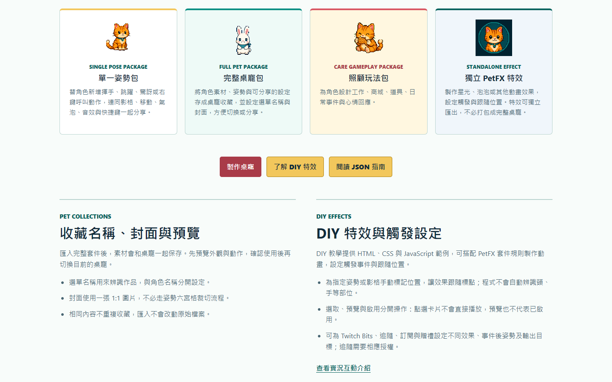
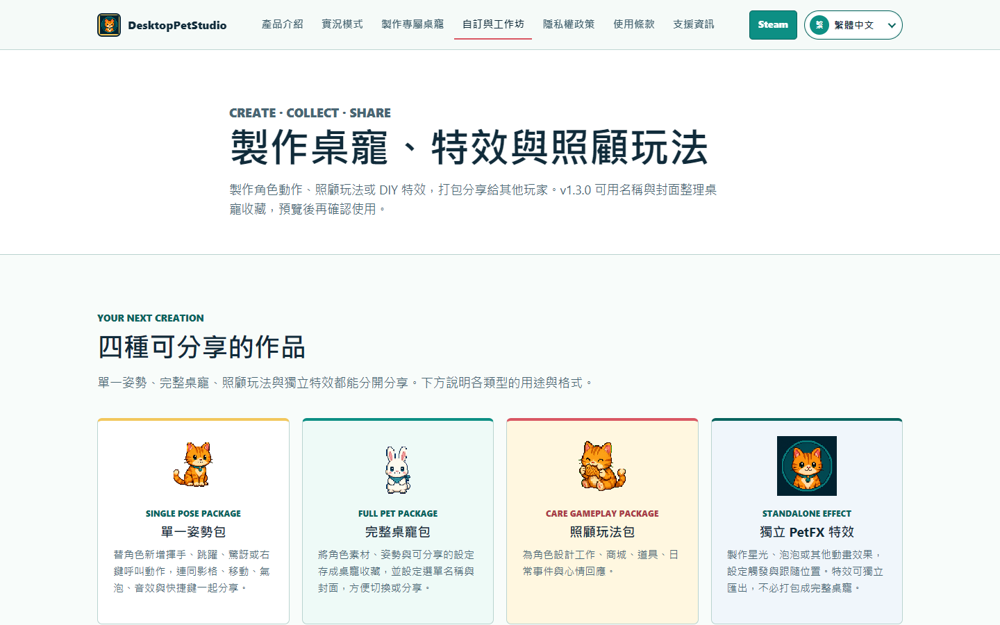
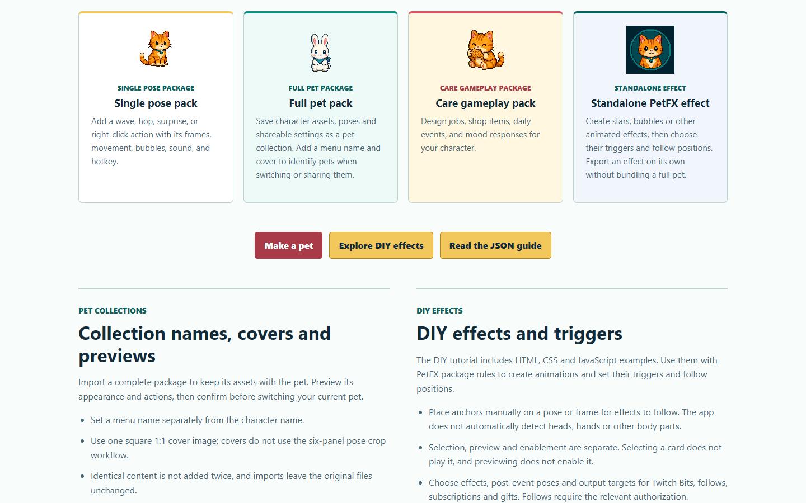
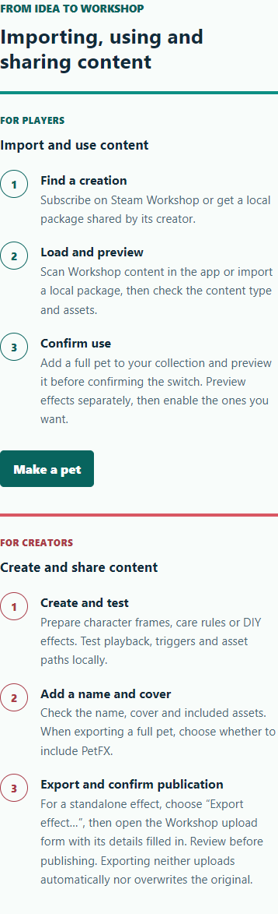
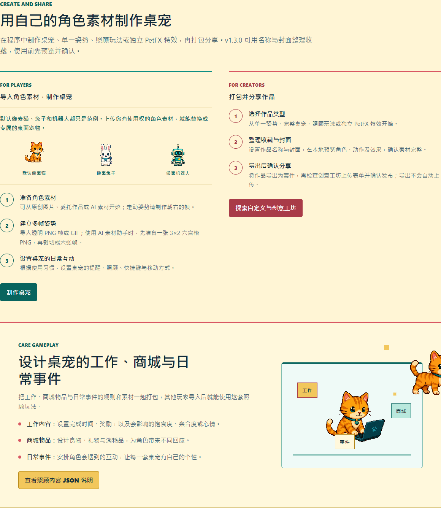

2026-10-29 · 設計 v1.4 · 待確認，尚未套用正式網站
自訂與工作坊：三語內容更新預覽
這一版補齊四種作品、收藏與封面、DIY 特效及分享流程，並同步首頁入口。保留原站視覺風格與下方技術指南；頁面右上角可切換繁體中文、简体中文與 English。
本次更新
- 作品類型：單一姿勢、完整桌寵、照顧玩法、獨立 PetFX 特效。
- 收藏：名稱、封面、完整素材保存，以及先預覽再確認使用。
- DIY 特效：動畫、手動標點、事件觸發；區分選取、預覽與啟用。
- 分享：從本機測試、整理素材到匯出、檢查表單並確認發布。
- 繁中、簡中、英文內容對齊；桌寵教學、特效與 JSON 下載入口清楚可見。
頁面導覽流程
首頁工作坊入口 → 四種作品 → 收藏與特效介紹 → 八個自訂主題 → 玩家／創作者流程 → 技術指南與三語下載
需要開始製作時，可直接前往「製作桌寵」、頁內「DIY 特效」或「JSON 指南」。這是網站說明流程，實際匯入、匯出與發布在桌寵程式內完成。
實際瀏覽器畫面
v1.4 將桌機版三個按鈕整組置中，上下各留 52px。主標題與下方文案等寬，中文以完整詞組換行。三語文案改為直接說明功能與操作，保留原有格式、範例及使用限制。


收藏與 DIY 特效（英文桌機版）

玩家與創作者流程（英文手機版）

首頁工作坊入口（簡體中文桌機版）



已完成的檢查
最新 18 組瀏覽器檢查通過：介紹頁檢查三語與 1440／768／390／320px 寬度，首頁檢查三語與桌機／手機版。標題與內文等寬，沒有水平溢出。原有語言切換、頁內連結與技術範例保留；三語指南先前的實際下載檢查均與來源檔一致。
此處是可檢查的設計版本，正式頁面與 GitHub 尚未變更。需求、事實依據與驗證記錄 · 瀏覽器檢查資料